PIONEER （パイオニア）
1938年創業、1947年設立のオーディオ専業メーカー。「カロッツェリア」シリーズのカーコンポーネントや、レーザーディスクプレーヤーをはじめとした映像関連機器にも強い。DVDレコーダーの先鞭を付けたのもこのメーカー。
ヘッドフォンメーカーとしても初の製品はSE-1の発売が1961年（＊1）と歴史は古く、またデザインに留意した時期も早かった。ヘッドフォンの老舗であるエレガの技術者がパイオニアの影響で自社製品のデザインに気を配るようになったと明かしている。コーン型が主流であった時代は他社よりも製品数も多く（＊2）、早い時期にヘッドフォン単独のカタログ（＊3）を用意するなど熱心であった。しかし70年代末から80年代初頭に、コンデンサー型、オープンエア型で2万円を超える高額モデルを出した後は、他の有力なヘッドフォン・ブランドが2万円を越える高額機種を出すなかで、比較的価格を抑えた機種をそろえる傾向が続いている（＊4）。ただし多くのオーディオブランドが軽量なオープン型やインナーイヤー型のみのラインナップとなり、次第に衰退していったのとは違い、80年代後半から再びコストパフォーマンスに優れた機種を作り続けていた（＊5）。
＊1 ダイナミック型ヘッドフォンの老舗、エレガのコンシュマー用の第1号機DR-59が1959年、スタックスのSR-1が1960年であり、総合的なオーディオメーカーとしてはかなり早い。
＊2 1973年当時の機種数は12機種。エレガの16機種に次いで多く、同時期のソニーは3機種、テクニクス（現パナソニック）、ビクターは5機種だった。これには国内のメーカーでは極めて早い時期にダイナミック型のオープンエアタイプに着手していたことも影響している。73年上期の時点ではソニー、テクニクス、ビクターにはオープンエアタイプはなかった。→当時の状況は時代別インデックスの1975年のリストを参照ください。
＊3 国内の多くのメーカーではヘッドフォンは総合カタログやアクセサリーカタログの片隅に小さく扱われるのが当たり前であり、当時はマイクロフォンやカートリジッジのほうが相対的な地位は高かった。
＊4 1985年頃以降、パイオニアは再び小型・軽量モデル以外の新製品を出すようになったが、トップモデルでも定価ベースで2万円未満のモデルしか出さない時期が長く続いた。しかし最近、高級カナル型やDJモデルではあるが、2万円以上のモデルを出すようになった。
＊5 現在では、オーディオ事業から撤退を発表、ヘッドホン関連事業は、オンキヨーに売却されることが2014年11月7日に公表された。現在ではカーオーディオなど車載機器に特化したメーカになっている。
PIONEER
（パイオニア）の製品を以下のように分類する。（この分類は個人的な意見で、メーカーの分類ではありません）
なおパイオニアの1990年代中盤以降の製品については資料が現時点では手元にほとんどない。
�T.コーン型のモデル
�@1960年代のモデル
SE-1 SE-2 SE-2P SE-20 SE-21 SE-22 SE-30 SE-50
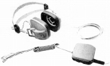 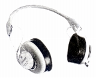 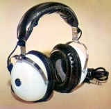
�A密閉型モデル
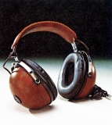
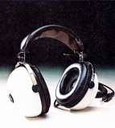
(左 SE-25 右 SE-35)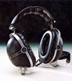
(SE-505)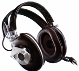
(MONITOR10)
�Bオープン型モデル
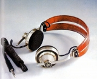
(SE-L40)SE-L20A SE-L25A SE-L201 SE-L401
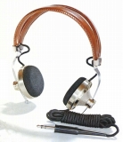
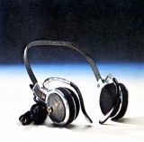
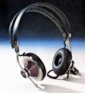
(左 SE-L40 中央 SE-L25A 右 SE-L401)
�C特殊なモデル
（4チャンネル機） SE-Q404 （無線機） SEW-5
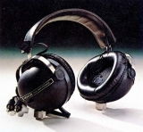 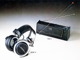
�U.圧電型・コンデンサー型
�@圧電型(ハイポリマー型)
珍しい膜状圧電振動板によるヘッドフォン。技術発表時のプロトタイプをほぼそのまま製品化したのが、SE-700。その後の量産技術反映の廉価版が、SE-300と500、振動板を湾曲させるハイポリマー型の特長をデザインに反映させている。
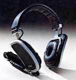 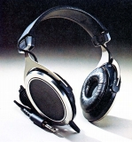
�Aコンデンサー型モデル
エレクトレットコンデンサー型のSE-100Jと純コンデンサー型のSE-1000。SE-100Jは最初（1971年発売）のエレクトレット使用のコンデンサー型だとの記述がある。SE-1000はトランスによる昇圧が一般的であった中で、半導体によるアダプターを採用した珍しい機種。
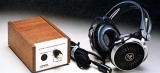
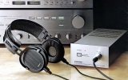
(左 SE-100J 右 SE-1000)
�V.初期のドーム型モデル
1970年代後半から1980年代半ばまでのドーム型モデル。
�@バリアブルチェンバータイプ
パイオニア独自のバリアブルチェンバータイプモデルと同一デザイン系列の廉価モデル
(注 輸出モデルでSE-6という機種があるが詳細は不明）
(廉価版の通常ドーム型）
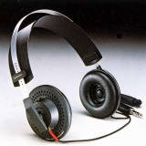
(SE-2)
(バリアブルチェンバータイプ）
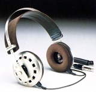
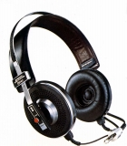
(左 SE-7 右 Eleven(SE-11))
(高級機） Master-1S Master-1G (小型・軽量モデル) SE-L15
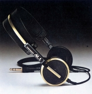
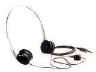
(左 Master-1G 右 SE-L15)
�A密閉型モデル
コーン型の密閉モデルのイメージそのままに、ドライバーをドーム型に置き換えた製品群。
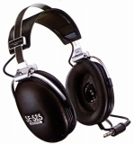
(SE-525)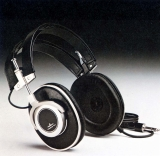
(MONITOR10�U)�B小型・軽量モデル
1980年代の小型・軽量機の流行に合わせて発売した製品群
SE-L2A SE-L3 SE-L4 SE-L5 SE-L7 SE-L11 (SE-L15)
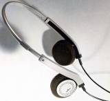
(SE-L3)
SE-L10 SE-L30 SE-L50 SE-L55 SE-L70 SE-L90
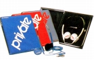
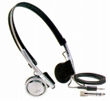
(左 SE-L55 右 SE-L90)
（SHELLシリーズ）
イヤパッドを持たない貝ガラ状のボディの製品群。
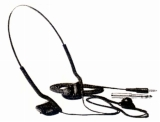
(SE-L44)
�Cその他のモデル
1980年代のパイオニアはなぜかインナーイヤー型に消極的だった。把握している範囲では1990年代も扱っていない。SE-DJ1は明確なDJ用モデルとしては最古の製品で、テクニカのATH-30COMより古い。
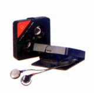
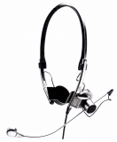
(左 P・I・0-5 右 SE-DJ1)
�W.デジタル対応モデル
1980年代中盤以降のデジタル時代対応モデル。小型・軽量モデルの流行で中型機以上の開発が停止したため結果的にロングランとなったバリアブルチェンバータイプや同時期の密閉型の後継モデル群。チタニウムやセラミックチタニウム振動板、スターカッド構造のコード等を採用した全く新しいシリーズだが、かつてのような2万円超のモデルはなくなった。MONITORシリーズ（密閉型）とMASTERシリーズ（オープンエア型）は耳のせタイプと耳おおいタイプで整備された。なおパイオニアではこのシリーズの上級機(SE-90D�U、SE-M90）からネオジウムマグネットが採用された。
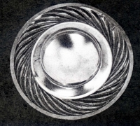
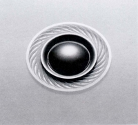
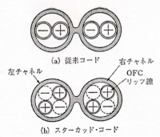
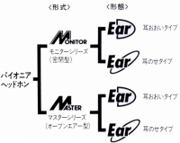
（左から SE-90D等のチタニウム振動板、SE-90D�U等のセラミックチタニウム振動板、スターカッドーコード、当時の系統図）
�@MONITORシリーズ（密閉型）
(耳のせタイプ） SE-50D SE-90D SE-50D�U SE-90D�U
(耳おおいタイプ） SE-M70 SE-M90
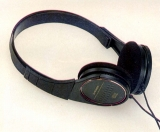
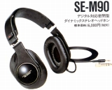
(左 SE-90D 右 SE-M90)
�AMASTERシリーズ（オープンエア型）
(耳のせタイプ） SE-30D SE-A60 SE-A80
(耳おおいタイプ） SE-A4 SE-A6 SE-A8
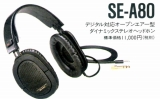
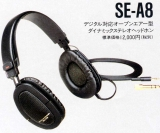
(左 SE-A80 右 SE-A8)
�B80年代末のモデル
MONITOR/MASTERシリーズと同軸(コアキシャル)２ウェイ型シリーズの間で一時期フラグシップモデルとなったSE-919D等。MONITOR/MASTERシリーズの36�o径から50�o径の大口径ドライバー（SE-919D)が採用された。なおスターカッド構造のコードはなくなり通常のリッツ線となった。
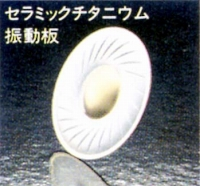
（50�o径のSE-919D振動板）（オープンエア型） SE-313 SE-315 SE-513D SE-515D
（密閉型） SE-526D SE-517D SE-725D SE-727D SE-917D SE-919D
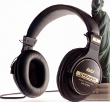
(SE-919D)
�X.90年代初頭のモデル
同軸(コアキシャル)２ウェイ型(SE-500D、700D、900D)を中心したモデル。
SE-C5 SE-100AV SE-200D SE-300D SE-400D SE-500D SE-700D SE-800D SE-900D
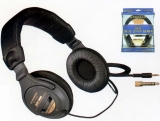
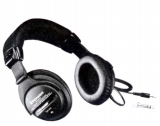
(左 SE-500D 右 SE-900D)�Y.1990年代中盤以降のモデル
1990年代中盤以降、パイオニアは相当数のモデルを発表しているが、本格的なオーディオ用ヘットホンの開発については消極的だ。サイト公開時点（2009年）でオーディオ用ヘットホンのトップモデルはいまだにSE-900Dが務めていた（現在では生産終了）。大きな変化としては、現在のパイオニアのヘッドフォンではメインとなっている本格的なＤＪモデルが登場したこと、そして従来消極的だった携帯プレーヤー対応機種が充実し始めた。
�@密閉型モデル
SE-330D SE-440D SE-550D SE-33AV SE-66AV
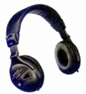
(SE-440D)SE-M300 SE-M500 SE-M650 SE-M750
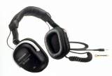
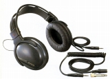
(左 SE-M500 右 SE-M750)SE-M270 SE-M370 SE-M570 SE-M870
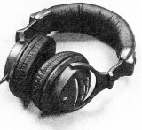
(SE-M870)SE-F45-L SE-F50 SE-F70 SE-F70X SE-F75-L
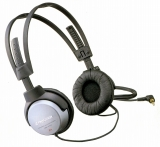
(SE-F70)
�Aオープン型モデル
SE-303 SE-A200 SE-A250 SE-A400
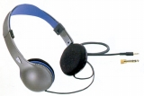
(SE-A200)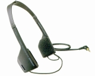
(SE-F5)
�Bその他
（ＤＪモデル） SE-DJ5000 SE-DJ250
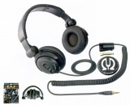
(SE-DJ5000)
＊MONITOR10、SE-4、SE-7、Eleven(SE-11)、SE-15、SE-25、SE-205、SE-L20A、SE-L25、SE-L40、SE-L55について豊永尚輝 氏所有機の画像を使用しました。またSE-21について「つきじ」氏所有機の画像を使用しました。ありがとうございます。